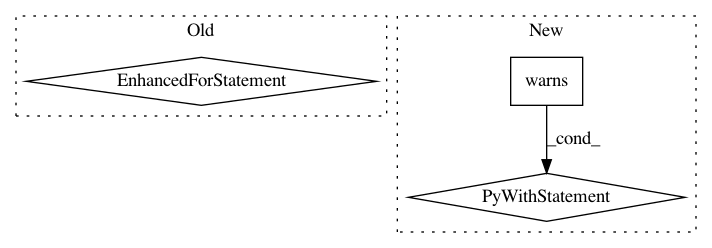

ff90100b13be1ebdfe53f1bf02309c78e65278fe,lib/matplotlib/tests/test_constrainedlayout.py,,test_constrained_layout7,#,160
Before Change
gsl = gridspec.GridSpecFromSubplotSpec(2, 2, gs[0])
gsr = gridspec.GridSpecFromSubplotSpec(1, 2, gs[1])
axsl = []
for gs in gsl:
ax = fig.add_subplot(gs)
axsl += [ax]
example_plot(ax, fontsize=12)
ax.set_xlabel("x-label\nMultiLine")
axsr = []
for gs in gsr:
ax = fig.add_subplot(gs)
After Change
def test_constrained_layout7():
"Test for proper warning if fig not set in GridSpec"
with pytest.warns(UserWarning, match="Calling figure.constrained_layout, "
"but figure not setup to do constrained layout"):
fig = plt.figure(constrained_layout=True)
gs = gridspec.GridSpec(1, 2)
gsl = gridspec.GridSpecFromSubplotSpec(2, 2, gs[0])
gsr = gridspec.GridSpecFromSubplotSpec(1, 2, gs[1])
axsl = []
for gs in gsl:
ax = fig.add_subplot(gs)
// need to trigger a draw to get warning
fig.draw(fig.canvas.get_renderer())
@image_comparison(baseline_images=["constrained_layout8"],
extensions=["png"])
def test_constrained_layout8():
"Test for gridspecs that are not completely full"
In pattern: SUPERPATTERN
Frequency: 3
Non-data size: 3
Instances
Project Name: matplotlib/matplotlib
Commit Name: ff90100b13be1ebdfe53f1bf02309c78e65278fe
Time: 2018-02-06
Author: jklymak@gmail.com
File Name: lib/matplotlib/tests/test_constrainedlayout.py
Class Name:
Method Name: test_constrained_layout7
Project Name: mne-tools/mne-python
Commit Name: ba0b59cabf25d25989ca10bf4df5bdd2e8ef9b24
Time: 2019-04-26
Author: dan.mccloy@gmail.com
File Name: mne/viz/tests/test_epochs.py
Class Name:
Method Name: test_plot_epochs
Project Name: mne-tools/mne-python
Commit Name: 1b9d2228bc40f817ef1765686bc2ec6e81079d13
Time: 2020-12-17
Author: larson.eric.d@gmail.com
File Name: mne/preprocessing/tests/test_ssp.py
Class Name:
Method Name: test_compute_proj_ctf